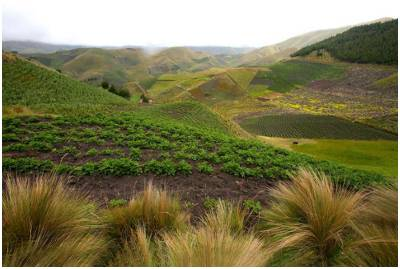

|
SimPolilla
Modélisation de la dynamique spatiale d'un ravageur
invasif dans les Andes
François Rebaudo, Véronica
Crespo-Pérez, Olivier Dangles
 SimPolilla est
un automate cellulaire permettant de simuler différents
scenarios d’invasion de la teigne de la pomme de terre Tecia
solanivora dans la Sierra Andine d'Equateur.
Spécifiquement notre équipe cherche à comprendre les
effets des activités anthropiques sur la propagation de
ce ravageur (lieux de stockage des tubercules,
dispersion via le commerce de pomme de terre semence,
entre autres). Au-delà du modèle de la teigne de la
pomme de terre en Equateur, nous tentons d’inscrire
notre démarche dans le cadre plus large de la
modélisation des espèces invasives en incluant une
dimension sociale (modélisation des agro-écosystèmes).
Le Modèle
L'environnement est défini par un ensemble de couches
issues d'un Systèmes d'Information Géographique (usage
du sol pour la présence ou absence de cultures,
température, altitude, précipitations, villes et
villages, nombre d'habitants, lieux de stockage).
La teigne évolue dans ce paysage en fonction des
contraintes locales liées à l'environnement mais aussi
en fonction des activités humaines. A titre d'exemple la
dispersion du ravageur intervient de manière diffuse par
le mouvement propre du ravageur mais aussi de manière
saltatoire par le mouvement des agriculteurs de village
à village.
Cet automate cellulaire a été validé par 3 ans de
données réalisées grâce à des pièges à phéromones. Il
est utilisé comme support pour des formations auprès des
partenaires locaux et des agriculteurs, et de support
pour le développement d'un modèle multi-agents étudiant
les dynamiques locales au sein d'une communauté
d'agriculteurs.
Pour plus d'informations sur cette application, contacter
l'auteur
|
|